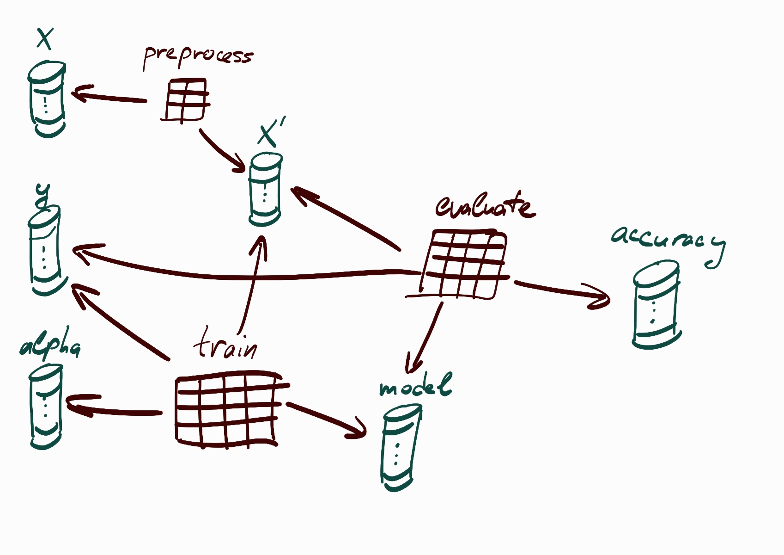
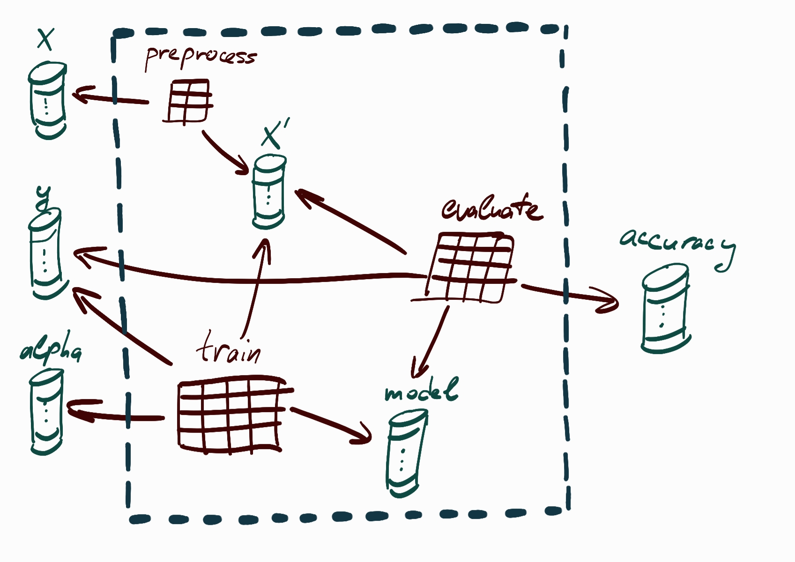
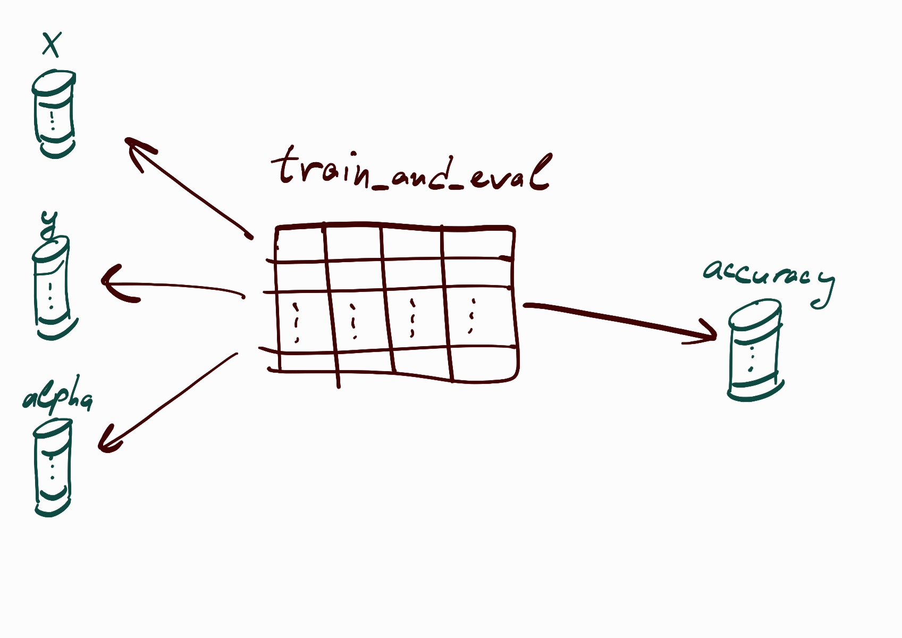

The Infinite Interactive Session¶
Or: Abstracting Data Management Away
Summary
Managing storage in computational projects is a pain. While there are tools to help you save, load, query, and organize results, they also impose on you extra code and concepts. However, this is only the symptom of a more fundamental separation between what it’s like to compute results, and what it’s like to manage their storage through a different interface. Constantly switching between these two worlds makes it hard to compose, iterate on, and query computational pipelines in the most natural way. Is this inevitable?
Mandala implements a simple proposal for eliminating this separation: re-using the code of your computations - written and evolved using native Python, without any data management logic - as the interface to the storage of their results. To enable this, it tightly integrates memoization and a relational database (no knowledge of SQL required) with core constructs of the ambient programming language, such as control flow, data structures, and subroutines.
These features work mostly behind the scenes to allow you to naturally build and evolve only the code expressing the computations in a project, and execute this same code in different contexts to achieve the goals of data management in a high-level way. Moreover, such code is a more natural, familiar, flexible, composable, and evolvable way to tell the story of your results than filenames or another system of names/annotations. This results in dramatically simpler programming patterns for data management.
While still closer to a prototype than a production-ready system, mandala has been successfully used to manage a large-scale machine learning project with tens of experimental primitives and workflows. This case study suggests that the complexity of large-scale computational projects can be essentially reduced to that of defining and composing their computational building blocks - and the data management capabilities can be induced “for free” from this.
Introduction¶
A glimpse of where we’re headed¶
Consider a data science snippet to cluster a dataset, collect the
centers of large clusters, and compute the closest center to a given example x:
X, y = get_data()
for alpha in (0.1, 0.2):
clusters = cluster_data(X, alpha=alpha)
centers = [get_center(cluster) for cluster in clusters if len(cluster) > 100]
closest_center = get_closest(centers, to=x)
This is the kind of throwaway code you write in an interactive session to run a quick experiment: unburdened by storage logic, expressive (loops, conditionals, data structures, …), and all the more concise for it. Yet, we’ll see how to use only code like this, with minimal modifications, as an elegant way to manage, query, and evolve persistent (or in-memory) data in large-scale computational projects.
How is this possible? The central idea is to use the executable code computing your data to refer to the storage locations of this data, instead of using a name. This code is both a more natural medium for describing computational data, and something you have to write anyway. Thus, it’s hard to imagine a simpler solution - if it can work at all! And as it turns out, while it’s somewhat weird, it can. By using pervasive, Python-integrated memoization and some other ideas, it’s possible to turn this concept into a scalable data management solution that works unobtrusively behind the scenes to extend Python-native code with “data management superpowers”.
In particular, by using such code as a storage interface, you can save, load and
delete any of the objects being computed, query for relationships between them
(say, a table of alpha vs closest_center), add more parameters and logic to
this computation while reusing past results, and enable incremental computation
(say, simply change the 100 to a 50, re-run, and automatically reuse already
computed centers).
Importantly, this requires no decisions about how to organize storage, name files and annotate objects, and no extra code to imperatively carry out the actions to accomplish these tasks. The rest of this blog post goes into the details of how this works, and its advantages over other solutions.
The data management problem¶
If you’ve done some computational experiments, you may have at some point created a file like this:
You probably don’t have fond memories of that time. Trying to avoid this situation motivates the data management problem for computational experiments: how should we organize results in persistent storage? Should we encode parameters in file names? What kind of organization makes it easy to evolve a project without extra work or confusion on the storage side? What interfaces should we use to save, load, query and delete results?
Wait, aren’t there tools for that?¶
Yes, there are many! Typically, they let you automatically save and package together (1) some inputs (e.g. parameters), (2) code that takes in these inputs, and (3) the results of running the code on the inputs - as a single named experiment. This is the core abstraction of such tools; they then typically give you ready-made interfaces through which to run experiments, refer to them, load their results, and query and compare results across experiments.
Where solutions fall short¶
However, there’s a problem. While these tools are great when you want to log
and compare things across a single kind of experiment, they are cumbersome when
trying to compose multiple experiments and iterate on / query the whole composition.
For example, to compose a new experiment f with an existing experiment
g, you must identify the name and configuration of one, load its outputs, and
pass them into the other. A simplified example would be
y = load_run('g', input=x)
z = run_experiment('f', input=y)
Compare this with the simplicity of function composition: z = f(g(x)), which
expresses the same idea. This glue code in the middle gets more verbose and
error-prone with more interesting composition patterns. It shows up in many
other use cases, such as
Iterating on a pipeline of experiments with new logic and parameters, especially when you want to automatically reuse already computed results and compute only what changes.
End-to-end queries across compositions of experiments, like when you want to understand how the final metrics in some pipeline depend on input quantities.
Apart from code overhead, there’s also concept overhead: for each tool, there are interfaces, concepts, and idioms you need to get used to that go beyond what you need to know just to run your computations, and sometimes against the most natural way to run them.
A “two systems” problem¶
A way to sum up these issues is that, once you adopt a data management framework, you have two systems to think about and interface with: the logic of your actual computations, and how this logic fits with your framework. Going back and forth between these two worlds creates friction, both in your mind and in your code.
You might think this “two systems” problem is to some extent inevitable if persistent storage is required. But is it really? Could there be a simpler, more conceptually satisfying solution for data management?
A radically different approach¶
Mandala implements a fresh approach that seeks to resolve these tensions, and at the same time provide an opinionated yet flexible vision for managing computational data. The key to both goals is to turn computational code - written without any data management logic - into the interface to storage.
Specifically, mandala adopts the function as the basic unit of both computation and data management - as opposed to something more like a script, which is what most other tools use. Function arguments are the inputs to the “experiment”, and return values are the outputs. Compared to scripts or analogous experiment abstractions, functions
Can compose much more freely, flexibly and concisely by accessing the power of native Python (control flow, data structures, dynamically generated configuration, …).
Have better-behaved, refactorable interfaces.
Can be hierarchically organized to make code structured and concise.
Mandala integrates memoization and a relational database with Python to extend these familiar concepts to the domain of data management. In this way, the data management system naturally mirrors and extends your computations behind the scenes, instead of competing with them for your attention, understanding, and lines of code. You are back to using a single, familiar system (Python’s native idioms) to do both computation and data management, overcoming the two systems problem.
Outline¶
Here’s a guide to this (rather long) blog post:
“Computational code as storage interface” gives a brief overview of mandala’s main features, with code samples of how the main tasks of data management can be accomplished for a simple running example, and pointers to subsequent sections diving into each topic in more detail.
“Case study: interactive parameter exploration” uses mandala to manage an actual machine learning project, and demonstrates the main ways of interacting with storage through computational code in relatively simple (but still practically useful) settings.
“But does it scale?” presents the main tools for scaling the data management patterns to projects that are more complex and/or larger. In particular, it demonstrates how native data structures and control flow can be incorporated in the code-as-storage-interface idea.
“Related work” describes some relevant tools and comparisons.
“The infinite interactive session” concludes.
Computational code as storage interface¶
Consider the following code that could have produced the contents of the file discussed above:
preprocess = True
X, y = load_data()
if preprocess:
X = preprocess_data(X)
model = train_v2(X, y, alpha=0.1)
It only expresses what you want to compute - hence we refer to it as computational code. To accomplish the goals of data management - whether you are doing this “by hand” or with a specialized tool - you must intersperse this or similar code with extra storage logic that is different depending on the particular use case (saving, loading, computing, querying, …). By contrast, with mandala you can accomplish all of these tasks by directly re-using the computational code, without any extra logic. Let’s briefly sketch what this looks like.
Evolve projects with composable memoization¶
For example, wrapping the computational code within the run context
manager like this:
with run(storage):
preprocess = True
X, y = load_data()
if preprocess:
X = preprocess_data(X)
model = train_v2(X, y, alpha=0.1)
adds “composable” memoization to each function call: inputs/outputs to each call are automatically persisted/cached without data duplication. Importantly, re-running this code retraces the chain of memoized calls (and loads in memory all the objects computed in this block of code) without really executing them. End-to-end memoization lets the same piece of code be used for many things at once: computing and saving, resuming computation, and imperatively querying what was computed. The memoization implemented in mandala is also compatible with Python’s data structures, control flow and functions.
Retracing also makes it extremely easy to compose new logic and parameters on top of
existing results. For example, say we’ve already ran this code, and after
looking at the results, we decide to run it with alpha=0.2 as well,
and also run a brand-new analyze_model function to compute some statistics of
both models (the old one with alpha=0.1 and the new one with
alpha=0.2). We can directly do this - without redoing any computation - by adding
code to do the new work on top of the current code and re-running:
with run(storage):
preprocess = True
X, y = load_data()
if preprocess:
X = preprocess_data(X)
for alpha in (0.1, 0.2):
model = train_v2(X, y, alpha=alpha)
result = analyze_model(model)
When this code runs, the already computed quantities are not recomputed, but only loaded from storage. Once the code hits a function call that hasn’t been executed, this triggers computation. Evolving a project with persistent storage thus becomes as easy as gradually growing computational code.
Use code as declarative query interface to its results¶
As another example, the query context manager
with query(storage) as q:
preprocess = True
X, y = load_data()
if preprocess:
X = preprocess_data(X)
alpha = Query() # the only new code is this...
model = train_v2(X, y, alpha=alpha)
table = q.get_table(alpha, model) # ... and this!
re-uses computational code (with minimal modifications) as a declarative query
interface to search by pattern-matching computational dependencies across the
entire storage. In this case, table is a table of all models trained on the
preprocessed dataset across different values of alpha, and will look something
like this:
alpha |
model |
|---|---|
|
Model trained with |
|
Model trained with |
By minimally changing this code, we can obtain a similar table for any collection of variables in this code across experiments. Moreover, since the query code closely mirrors the computational code, it’s easy to evolve both in tandem.
Refactor, abstract and delete results through code¶
The unit of storage is the function, and functions have nice structure. For
example, you can refactor the preprocess_data function by
exposing an extra parameter with a default value; upon this, mandala will
retroactively update the data of past calls to look as if they used this default
value for the new argument.
As another example, you can encapsulate a computational pipeline as a single parametrized function. Mandala’s memoization is compatible with this, which lets you extend the abstractive power of functions to data management.
As a final teaser, you also have an “undo button” for computations that deletes
all results contained within a delete context manager:
with run(storage):
preprocess = True
X, y = load_data()
if preprocess:
X = preprocess_data(X)
with delete(): # notice this context manager!
for alpha in (0.1, 0.2):
model = train_v2(X, y, alpha=alpha)
result = analyze_model(model)
A name tells a story; code tells it better¶
Across these three vignettes, we’ve seen how to perform the main activities of data management in a very high-level way, by minimally editing computational code. The overarching theme is a shift from names to code as the way to tell the story of results.
Since code is the natural medium for expressing computational ideas, it is a better way to tell the story of data in an evolving project along many dimensions. It is concise and expressive, less ambiguous, easier to compose and iterate on, naturaly editable and refactorable, and its structure implicitly contains the relationships you want to query for. Importantly, as you keep adding more computations on top of existing ones, these data management patterns naturally scale up in harmony with your code, instead of accumulating complexity.
Next, let’s see how these patterns work in an actual project.
Case study: interactive parameter exploration¶
Playing with the parameters of a computation is a prototypical task in machine learning and data science. In large-scale projects, this often is a human-guided exploration, which accumulates new computational components over time, and is more open-ended than simply trying to optimize an explicit metric.
In this section, we’ll show how mandala is a natural fit for keeping track of the results of such a process:
Easy iteration: thanks to the composable nature of mandala’s memoization, adding new parameters and logic to an existing search is as simple as it can be.
Powerful queries for free: as you build computations, you are, at the same time, creating a query interface that can be used - imperatively or declaratively - to easily access the results of the exploration.
Flexible workflow logic: since everything is done in native Python, there are no interfaces and syntax black-boxing your computations away from you. This allows you to transparently interact with storage, and directly use custom composition logic to define workflows.
We’ll start with simple scenarios illustrating the core features, and then develop an example with more interesting interactions between the components being tuned.
Problem landscape¶
By interactive parameter search we mean a process where you start with some computation (e.g. model training), play with its parameters, then come up with another computation using the results of the first (e.g. some way to analyze the model), play with the parameters of both computations so far, add yet another computation (e.g. train another kind of model for the same dataset), play with its parameters in addition… and so on.
In other words, you alternate between adding more computational primitives, building ever larger pipelines combining them, and exploring all the available parameters. Typically, you want to save all the quantities computed, and query how they depend on each other and the inputs across experiments. Many (if not all) computational projects fit this description. Existing tools for this problem fall into two general camps:
Experiment tracking frameworks: these are general-purpose solutions for managing computational projects. As discussed above, the problem is that they introduce concepts and code that stand in the way of smoothly composing and querying computations.
Hyperparameter optimization tools: these tools focus on automatically optimizing a single black-box function for some metric over a search space of parameters. This is great if it fits your use case, but an awkward solution when you want to interactively and transparently tune a growing collection of components composed with custom logic.
Let’s see how mandala is different.
Setup¶
To have something concrete to work with, we’ll define a few simple experimental primitives: to generate a synthetic dataset, preprocess it with PCA, fit a logistic regression model, and evaluate this model on some data. Below are imports and functions that set up this mini-project:
### imports
import numpy as np
from numpy import ndarray
import pandas as pd
from typing import Tuple
from sklearn.decomposition import PCA
from sklearn.datasets import make_classification
from sklearn.linear_model import LogisticRegression
from sklearn.metrics import accuracy_score
np.random.seed(42)
### mandala setup
from mandala.all import *
set_logging_level('warning')
storage = Storage(in_memory=True)
### experimental primitives
@op(storage)
def generate_data() -> Tuple[ndarray, ndarray]:
print('generating data...')
X, y = make_classification(n_samples=1000, class_sep=0.75)
return X, y
@op(storage)
def preprocess_data(X, n_components=2) -> ndarray:
print('preprocessing data...')
return PCA(n_components=n_components).fit_transform(X)
@op(storage)
def fit_regression(X, y, C) -> LogisticRegression:
print('fitting regression...')
return LogisticRegression(C=C).fit(X, y)
@op(storage)
def evaluate_model(model, X, y) -> float:
print('evaluating model...')
return accuracy_score(y, model.predict(X))
Automatic memoization¶
The @op decorator is used to connect an experimental function to a storage,
so that calls to the function will be memoized in the storage. To illustrate,
we can now compose the obvious workflow using these functions (without the PCA
projection for now):
with run(storage):
X, y = generate_data()
model = fit_regression(X, y, C=0.1)
accuracy = evaluate_model(model, X, y)
print(accuracy)
generating data...
fitting regression...
evaluating model...
AtomRef(0.812, type=AtomType(float))
The AtomRef object is an kind of value reference, which wraps a result (in
this case the accuracy of the model) with metadata relevant for storage and
computation. Since each function in the workflow is memoized, running this code
again will not execute any of the function calls:
with run(storage):
X, y = generate_data()
model = fit_regression(X, y, C=0.1)
accuracy = evaluate_model(model, X, y)
print(accuracy)
AtomRef(0.812, type=AtomType(float))
Instead, it retraces each step of the code, loading the results of each function call from storage. As we’ll see next, retracing is a powerful tool for interfacing with storage.
The unreasonable effectiveness of retracing¶
In this section, we introduce one of two main patterns for using code to interact with the storage of its results - retracing. This means simply re-running compositions of memoized functions. The results of each memoized call feed into the subsequent memoized calls, so that steps of the original computation are retraced without actually executing any costly operations - until calls that have not been memoized are encountered. For a step-by-step description of the implementation, open the dropdown below:
How is memoization/retracing implemented?
Mandala’s memoization is quite similar to what’s usually referred to as
memoization, with a few twists to make it “composable”. Each memoized function
has a unique name (UID) that is immutable throughout its lifetime. Each value
reference (the kind of object returned from a memoized function) also has an
immutable UID. When a memoized function f is called on some Python objects,
The ones that are not value references are wrapped in value references, with the UID being a content hash of the Python object - and saved in storage.
Then, the UIDs and names of the arguments are combined with the UID of
fto produce the call UID for this call.Next, there are two cases:
If the call UID is not found in storage, this is a new call:
fis executed on the input objects, the results are wrapped with UIDs created by combining the call UID with the name of each output, and the results are saved in storage and returned. This is called causal hashing (as opposed to content hashing, which can optionally be used instead).If the call UID is found in storage, the originally computed results are just loaded and returned.
In this way, storage duplication when composing memoized functions is avoided, because once an object is wrapped in a value reference, it is not stored again. During retracing, each function call can quickly compute its call UID by looking at the UIDs of its inputs, look up the call data in storage (using the call UID as the key), and load its outputs - or trigger execution, if the call is not found.
There are a few more tricks to make memoization/retracing play nicely with Python’s core features:
control flow: retracing typically doesn’t need to load the objects computed by each function call; it only needs UIDs. This is the idea behind lazy loading. However, sometimes you do need to look at a value when retracing memoized code (say, if there’s a conditional branch that depends on a memoized object, or similar control flow). This is why lazy loading needs to be aware of such cases and automatically load values when needed.
data structures: operations like list comprehensions or indexing into a list can be implicitly treated as memoized functions in their own right. This lets you incorporate native data structures in memoized workflows, and still have retracing work the same way.
hierarchical memoization: memoized functions decorated with
@superopcan directly call other memoized functions inside their body, and they operate directly on value references (whereas@op-decorated functions actually receive the unwrapped values). This allows you to organize the computational graph of memoized calls hierarchically, which turns out to be quite beneficial.
As we’ll see over the course of this post, retracing can propagate through control flow, data structures and subroutines, and can load data from storage only when necessary. This allows you to traverse the storage of any computation flexibly and efficiently - without any glue code to “load this from there” at each step - which radically improves the ergonomics of many tasks involved in data management.
Iterate rapidly without re-doing expensive work¶
Retracing makes computations directly open to extension of both parameters and logic, without the need to reorganize storage or re-do work. To illustrate, let’s add in a preprocessing step, and range over a few choices of the number of PCA components:
with run(storage):
X, y = generate_data()
for n_components in (2, 4):
X_preprocessed = preprocess_data(X, n_components=n_components)
model = fit_regression(X_preprocessed, y, C=0.1)
accuracy = evaluate_model(model, X_preprocessed, y)
print(f'{n_components} components: {accuracy}')
preprocessing data...
fitting regression...
evaluating model...
2 components: AtomRef(0.758, type=AtomType(float))
preprocessing data...
fitting regression...
evaluating model...
4 components: AtomRef(0.786, type=AtomType(float))
Here, we re-used the call to generate_data, but all the other calls were new.
Suppose we now want to play with the parameters of the logistic regression too,
as well as try out one more value for the number of PCA components. We can do
this in the simplest possible way - by adding the new variation on top of the
existing code:
with run(storage):
X, y = generate_data()
for n_components in (2, 4, 8):
X_preprocessed = preprocess_data(X, n_components=n_components)
for C in (0.1, 1):
model = fit_regression(X_preprocessed, y, C=C)
accuracy = evaluate_model(model, X_preprocessed, y)
print(f'{n_components} components, C={C}: {accuracy}')
2 components, C=0.1: AtomRef(0.758, type=AtomType(float))
fitting regression...
evaluating model...
2 components, C=1: AtomRef(0.759, type=AtomType(float))
4 components, C=0.1: AtomRef(0.786, type=AtomType(float))
fitting regression...
evaluating model...
4 components, C=1: AtomRef(0.785, type=AtomType(float))
preprocessing data...
fitting regression...
evaluating model...
8 components, C=0.1: AtomRef(0.8, type=AtomType(float))
fitting regression...
evaluating model...
8 components, C=1: AtomRef(0.8, type=AtomType(float))
Here, we re-used the (already memoized) workflow executions with C=0.1, and
computed their analogous variants with C=1. In particular, note how this
approach allows us to transparently and directly tune multiple components in
the workflow. Indeed, the pre-processing step is fundamentally separate from the
training step, since multiple trainings reuse the same pre-processed dataset -
so bundling both into a single function would re-do unnecessary work.
Retracing also gives us a convenient way to look at all the results together, even though only some of the work was new. This brings us to the next point.
Use code as imperative query interface¶
In traditional data management setups, if you want to load in memory some specific experimental results, you have to first think about how they are stored - be it what filename(s) to point to, which table to look at, how you tagged them, and so on.
Retracing suggests a radically different way to interact with storage: use the code producing these results (which you must have written anyway!) to directly and flexibly traverse storage without re-doing expensive work. For example, we can collect the accuracies for particular parameter settings by minimally adapting the above code:
with run(storage):
X, y = generate_data()
for n_components in (4, 8):
X_preprocessed = preprocess_data(X, n_components=n_components)
for C in (0.1,):
model = fit_regression(X_preprocessed, y, C=C)
accuracy = evaluate_model(model, X_preprocessed, y)
print(f'{n_components} components, C={C}: {accuracy}')
4 components, C=0.1: AtomRef(0.786, type=AtomType(float))
8 components, C=0.1: AtomRef(0.8, type=AtomType(float))
Resume failed workflows effortlessly¶
Another benefit of retracing is that the end-to-end memoization of workflows means that every computation is automatically resumable on the granularity of individual function calls. Re-running code that failed partway through will retrace all the steps that succeeded, and resume computation from the first failure.
Code as a declarative query interface¶
Sometimes, using retracing as a query mechanism can be a poor fit. For example, you can be working on a large project where you don’t even remember all the different settings with which a workflow was ran. This means that you don’t know where to start retracing code from!
For situations like this, there’s a complementary declarative query interface, which pattern-matches computational relations against the entire storage. To illustrate, this is what such a query would look like for our hyperparameter search example:
with query(storage) as q:
X, y = generate_data()
n_components = Query().named('n_components')
X_preprocessed = preprocess_data(X, n_components=n_components)
C = Query().named('C')
model = fit_regression(X_preprocessed, y, C=C)
accuracy = evaluate_model(model, X_preprocessed, y).named('accuracy')
table = q.get_table(n_components, C, accuracy)
table
| n_components | C | accuracy | |
|---|---|---|---|
| 0 | 4 | 0.1 | 0.786 |
| 1 | 2 | 0.1 | 0.758 |
| 2 | 8 | 1.0 | 0.800 |
| 3 | 4 | 1.0 | 0.785 |
| 4 | 8 | 0.1 | 0.800 |
| 5 | 2 | 1.0 | 0.759 |
This is the kind of table you typically want in such parameter exploration applications: a relationship between input parameters and final metrics. The above example demonstrates how, by just reusing the code of the computational pipeline itself, you can easily obtain this table.
Wait, what just happened?¶
The query code looks deceptively similar to the computational code - in fact,
the easiest way to write the query code is to copy-paste the computational code
and make a few edits! However, the query context causes code to be interpreted
in a very different way:
instead of executing the function, calls to
@op-decorated functions inside aquerycontext manager build a computational graph behind the scenes. This graph encodes computational relations between the quantities in your experiment.you query this graph by passing a sequence of variables to the
get_tablefunction of the context manager. The result is a table, where columns correspond to these variables, and each row is a matching of values in storage to these variables that satisfies the computational relations encoded by the graph.
Why is this great?¶
This pattern is not simply a piece of code to write for a one-off query; it is better thought of as an interface for querying an entire project. For example, running the workflow with more parameters would not require a change to this query code; and choosing to query a different combination of variables requires only a minimal change, since the computational relations remain the same. And since the query code mirrors the workflow, the two can grow alongside each other, and be refactored in tandem (when e.g. renaming a function or function argument in an IDE).
Making the search more interesting¶
So far, we’ve only done a basic grid search over our pipeline. To get a better feeling for the power of composable memoization, let’s develop a more interesting workflow by composing primitives in more complex ways. Specifically, let’s ask the following natural question:
In particular, this is an example of a workflow where the composition pattern cannot be handled by ready-made interfaces (e.g. the Pipeline interface of scikit-learn), unlike our previous example. Indeed, here we not only have a step selecting the best model out of several, but also compare models across values of the same hyperparameter. However, we’ll be able to directly express this logic in native Python!
First, let’s define the new functions we need: to train a random forest model, get the predicted labels of a model, and compute the correlation of mistakes between two models’ predictions:
from sklearn.ensemble import RandomForestClassifier
@op(storage)
def train_random_forest(X, y, n_estimators=5) -> RandomForestClassifier:
return RandomForestClassifier(n_estimators=n_estimators).fit(X, y)
@op(storage)
def get_predictions(model, X) -> ndarray:
return model.predict(X)
@op(storage)
def get_mistake_correlation(predictions_1, predictions_2, y_true) -> float:
return np.corrcoef(predictions_1 != y_true, predictions_2 != y_true)[0, 1]
Below is the code to run this experiment. Note that it is a quite direct imperative expression of the natural language description of the experiment - there is no data management logic:
with run(storage):
X, y = generate_data()
for n_components_lr in (2, 4, 8): # PCA dimension for logistic regression
for n_components_rf in (2, 4, 8): # PCA dimension for random forest
### logistic regression training
X_preprocessed_lr = preprocess_data(X, n_components=n_components_lr)
lr_models = [fit_regression(X_preprocessed_lr, y, C=C) for C in (0.1, 1)]
lr_accuracies = [evaluate_model(model, X_preprocessed_lr, y) for model in lr_models]
# select the best logistic regression model
#! `unwrap()` is used to get the underlying value of a result
best_model = lr_models[np.argmax([unwrap(acc) for acc in lr_accuracies])]
### random forest training
lr_predictions = get_predictions(best_model, X_preprocessed_lr)
X_preprocessed_rf = preprocess_data(X, n_components=n_components_rf)
rf_model = train_random_forest(X_preprocessed_rf, y)
rf_predictions = get_predictions(rf_model, X_preprocessed_rf)
# compute the correlation of mistakes!
correlation = get_mistake_correlation(lr_predictions, rf_predictions, y)
Why is this great?¶
Memoization helps make code concise and natural - because all computations are memoized, we can directly loop over pairs of projection dimensions for each model kind, despite the fact that we’ll “repeat” some calls. The first time a preprocessing/training/etc call is found, it will be executed; the second time, retraced. Furthermore, we can freely reoder code as long as the same things are computed (i.e., the chains of memoized calls remain the same). In the above code, we reused the linear regression models and their accuracies in this manner.
Non-trivial incremental computaiton is easy - for example, we can add more values for
C and re-run this code. Maybe in some cases the best model will change -
which will cause new computation - and in others, it will stay the same, which
will re-use the existing results.
Collecting results in a table is easy, since all we have to do is add logic to collect the local variables and retrace the memoized code.
To demonstrate the last two points, let’s end with rerunning this code, but with
some additional values for the PCA dimensions and C, as well as logic to put
results in a dataframe and plot them:
import altair as alt
with run(storage):
X, y = generate_data()
results = []
for n_components_lr in (2, 4, 8, 16):
for n_components_rf in (2, 4, 8, 16):
# logistic regression training
X_preprocessed_lr = preprocess_data(X, n_components=n_components_lr)
lr_models = [fit_regression(X_preprocessed_lr, y, C=C) for C in (0.1, 0.5, 1)]
lr_accuracies = [evaluate_model(model, X_preprocessed_lr, y) for model in lr_models]
best_model = lr_models[np.argmax([unwrap(acc) for acc in lr_accuracies])]
# random forest training
lr_predictions = get_predictions(best_model, X_preprocessed_lr)
X_preprocessed_rf = preprocess_data(X, n_components=n_components_rf)
rf_model = train_random_forest(X_preprocessed_rf, y)
rf_predictions = get_predictions(rf_model, X_preprocessed_rf)
# compute the correlation of mistakes!
correlation = get_mistake_correlation(lr_predictions, rf_predictions, y)
results.append({'n_components_lr': n_components_lr,
'n_components_rf': n_components_rf,
'correlation': correlation})
df = pd.DataFrame(unwrap(results))
alt.Chart(df).mark_rect().encode(x='n_components_lr:O', y='n_components_rf:O', color='correlation:Q')
fitting regression...
evaluating model...
preprocessing data...
fitting regression...
evaluating model...
fitting regression...
evaluating model...
fitting regression...
fitting regression...
fitting regression...
evaluating model...
evaluating model...
evaluating model...
As we may expect, the mistakes are positively correlated - however, perhaps surprisingly, they are not always most correlated when comparing the same PCA dimensions! Anyway, maybe it’s all just random noise :)
But does it scale?¶
By now, you can hopefully imagine how extending the project from the previous section with more ideas and parameters would be easy to do using the patterns shown there. However, you may also already be aware of some obstacles on the way to efficiently scaling these patterns to larger and/or more complex projects.
After all, mandala relies on building a “web” of memoized calls for its data management patterns to work (yes, “it’s all connected”), which forces you to use it to organize all the data you compute. In large projects, this can be problematic: for example, retracing all the steps of some code and loading all objects in memory along the way just to get to a single final number can be very inefficient.
In this section, we’ll describe this and other major barriers to scaling up complexity, show examples of each, and demonstrate the tools to overcome them. Here is a guide to the different topics:
Using native data structures allows you to Python-natively express complex algorithms operating over collections of objects, and still have the benefits of retracing, and even declarative queries.
Hierarchical memoization is the primary tool for controlling complexity. By creating “shortcuts” in the computational graph of memoized calls, it makes retracing and declarative queries faster, and gives you a familiar and natural tool for high-level organization of both code and data.
Refactoring memoized functions lets you change your code and choose whether to preserve or forget the relationship to its past calls. This makes it easy to evolve a project in a backward-compatible way with storage, or fix a bug in a function and re-do only the work depending on this bug.
Lazy loading speeds up retracing by loading from storage only the data needed for retracing to proceed. Since retracing often needs just a storage address (instead of the actual object stored there) to figure out the next step, this saves a lot of work.
Transient values are function outputs (chosen by you) that are never saved in storage, and instead recomputed in-memory only when demanded. They let you trade-off computation time for storage space.
Parallelization is about integrating the distributed computing frameworks dask and ray, which are also function-based, with mandala.
Query branching pipelines describes a pattern for reusing declarative query code in cases when a project branches into multiple pipelines with a shared base.
Use native data structures, natively¶
In sufficiently complex computational projects, your computations naturally produce and/or operate on variable-length collections of individual objects of the same kind. Examples include computations that
Return a collection of objects, such as a clustering algorithm.
Return a mapping, such as a variable-length dictionary of metrics or neural network weight matrices.
Aggregate several objects, such as computing an average, ensembling multiple models, or picking the best element out of some collection.
Process data in chunks, for example to optimize some computation or simply be able to fit in RAM.
From a data management perspective, you may want to save, load and compute with the entire collection and its individual elements. Collections can share elements, so you want to avoid data duplication by storing shared elements only once. Finally, you may also want to keep track of which collection an element came from, or which elements combined to create a new collection for the purposes of data provenance.
Instead of coming up with new concepts and abstractions to achieve these goals, mandala allows you to use Python’s own data structures (lists and dicts), in Python-native ways in your computations. The tracking of the relationship between a collection and its elements happens automatically behind the scenes.
Case study: random forest¶
Let’s illustrate with a familiar example of model ensembling: random forest. Below are functions to “train your own random forest”: the first trains a single decision tree, and the second evaluates a random forest (represented as a list of trees) on a dataset:
from typing import List
from sklearn.tree import DecisionTreeClassifier
@op(storage)
def train_tree(X, y, max_features=2, random_state=0) -> DecisionTreeClassifier:
return DecisionTreeClassifier(random_state=random_state, max_depth=2,
max_features=max_features).fit(X, y)
@op(storage)
def eval_forest(trees:List[DecisionTreeClassifier], X, y) -> float:
majority_vote = np.array([tree.predict(X) for tree in trees]).mean(axis=0) >= 0.5
return round(accuracy_score(y_true=y, y_pred=majority_vote), 2)
Determinism and randomness
The above code illustrates another important concept: determinism vs
randomness in computations. In the above example, exposing the random_state
argument gives you explicit control over whether to use a previously trained
random decision tree or sample a new one.
Since mandala is based on memoization, once you run a function on a given choice of inputs, the result remains the same forever (unless you delete the call, and run it again). While this doesn’t strictly require determinism (you can have one-off randomness that “sticks”), it’s a better practice for reproducibility to make functions deterministic and explicit about randomness.
Importantly, you can directly pass a list of trees (as the signature of the
function indicates) produced by the train_tree function to eval_forest:
with run(storage):
X, y = generate_data()
trees = [train_tree(X, y, random_state=i) for i in range(10)]
forest_acc = eval_forest(trees, X, y)
print(f'Random forest accuracy: {forest_acc}')
Random forest accuracy: AtomRef(0.8, type=AtomType(float))
This is an example of using the list data structure natively within the data management system, i.e. in the way you’d use it in ordinary, computational Python code. The resulting workflow is still memoized end-to-end, and in particular all the properties of retracing hold for it. The implementation of this is explained a bit in the dropdown from earlier.
Incremental computation¶
An important consequence of the native use of data structures is that some natural kinds of “embarassingly” incremental computation are very easy to express without extra code. For example, the below code re-uses the 10 trees trained so far, and trains another 10 trees to evaluate random forests consisting of the first 5, 10, and 20 trees:
with run(storage):
X, y = generate_data()
for n_trees in (5, 10, 20):
trees = [train_tree(X, y, random_state=i) for i in range(n_trees)]
forest_acc = eval_forest(trees, X, y)
print(f'{n_trees} trees: {forest_acc}')
print(f'Random forest accuracy: {forest_acc}')
5 trees: AtomRef(0.78, type=AtomType(float))
Random forest accuracy: AtomRef(0.78, type=AtomType(float))
10 trees: AtomRef(0.8, type=AtomType(float))
Random forest accuracy: AtomRef(0.8, type=AtomType(float))
20 trees: AtomRef(0.75, type=AtomType(float))
Random forest accuracy: AtomRef(0.75, type=AtomType(float))
What about declarative queries?¶
Declarative queries can propagate through both the construction of collections,
and indexing into collections; this is considered an advanced feature. For
example, to pattern-match to the code above, we can match to a list of trees
using the MakeList function. We also match to a particular tree - the seventh
tree in the list of trees - to demonstrate that you can also index into
variables that match to lists:
with query(storage) as q:
X, y = generate_data()
tree = train_tree(X, y)
trees = MakeList(containing=tree, at_index=0).named('trees')
seventh_tree = trees[7].named('seventh_tree')
forest_acc = eval_forest(trees, X, y).named('forest_acc')
df = q.get_table(trees, forest_acc, seventh_tree)
df['n_trees'] = df['trees'].apply(len)
df = df.sort_values(by='n_trees')
df
| trees | forest_acc | seventh_tree | n_trees | |
|---|---|---|---|---|
| 0 | [DecisionTreeClassifier(max_depth=2, max_featu... | 0.80 | DecisionTreeClassifier(max_depth=2, max_featur... | 10 |
| 1 | [DecisionTreeClassifier(max_depth=2, max_featu... | 0.75 | DecisionTreeClassifier(max_depth=2, max_featur... | 20 |
Note that the run with 5 trees didn’t show up in this table! This is because no
seventh tree exists for it, so the constraints of the query were not satisfied.
A deeper discussion of matching to data structures and the at_index argument
is beyond the scope of this post.
The unreasonable effectiveness of hierarchical memoization¶
In this section, we introduce the main tool for scaling up mandala’s data management patterns - hierarchical memoization. This simply means packaging some algorithm that calls memoized functions as a memoized function of its own. Hierarchical memoization turns out to control complexity in lots of ways:
Fast retracing over any number of calls by taking shortcuts through higher-level memoized functions.
Efficient declarative queries (and in some cases makes declarative queries possible, where they were impossible before).
Shorter, simpler code, because you encapsulate common workflows into a single function (nothing new here - it’s just like in software engineering!).
Convenient higher-level indexing to organize your results in a way more convenient to you.
Motivation: retracing can be slow¶
Let’s revisit the random forest workflow:
with run(storage):
X, y = generate_data()
for n_trees in (5, 10, 20):
trees = [train_tree(X, y, random_state=i) for i in range(n_trees)]
forest_acc = eval_forest(trees, X, y)
print(f'Random forest accuracy: {forest_acc}')
Random forest accuracy: AtomRef(0.78, type=AtomType(float))
Random forest accuracy: AtomRef(0.8, type=AtomType(float))
Random forest accuracy: AtomRef(0.75, type=AtomType(float))
Imagine that you want to use retracing to collect the values of the random
forest accuracy across the different values of n_trees. These are just three
floating point numbers (so, tiny objects), but to get to them you have to
do a lot of unnecessary work:
along the way, you load potentially large objects (the dataset and decision trees) from storage. This is conceptually easy to fix by only loading things when you absolutely need to.
you have to retrace all the steps in the loop defining the list
trees. With 20 steps it may be OK, but loops with 1000s of steps will lead to a noticeable latency in interactive settings. We’ll solve this with hierarchical memoization.
Fast retracing with shortcuts¶
To make retracing fast, we’ll simply create a “shortcut” in the retracing process that skips over the loop. The shortcut will be implemented via - surprise! - yet another memoized function, but a higher-level one: one that can itself call other memoized functions.
@superop(storage)
def train_trees(X, y, n_trees) -> List[DecisionTreeClassifier]:
print('Hi from train_trees!')
return [train_tree(X, y, random_state=i) for i in range(n_trees)]
This is hierarchical memoization: the body of the memoized function itself
is composed of calls to memoized functions. It’s a way of adding
higher-level indexing to data, since the memoization table of the
higher-level function doesn’t really have “its own” data, but only points to data
computed by the lower-level functions. To indicate that this function works
directly with value references (instead of underlying objects), we decorate it
using the @superop decorator.
Implementation details of hierarchical memoization
There are only two levels in the hierarchy of memoized functions:
@ops, which are passed unwrapped Python objects, and@superops, which operate on value references, and can call@ops as well as other@superops.
While it’s possible, you should never call memoized functions from @ops,
since this will break the chain of memoized calls (remember, at the entry of an
@op, all value references are unwrapped, which means they don’t have their
UIDs anymore).
We can now refactor the workflow to use this “shortcut” function:
with run(storage):
X, y = generate_data()
for n_trees in (5, 10, 20):
trees = train_trees(X, y, n_trees)
forest_acc = eval_forest(trees, X, y)
print(f'Random forest accuracy: {forest_acc}')
Hi from train_trees!
Random forest accuracy: AtomRef(0.78, type=AtomType(float))
Hi from train_trees!
Random forest accuracy: AtomRef(0.8, type=AtomType(float))
Hi from train_trees!
Random forest accuracy: AtomRef(0.75, type=AtomType(float))
What just happened? Every call to train_trees retraced the body of the
function (as evidenced by the messages getting printed) - because at this point
these are all new calls! However, once these calls are memoized, retracing will
skip right to the result of the function, bypassing the loop:
with run(storage):
X, y = generate_data()
for n_trees in (5, 10, 20):
trees = train_trees(X, y, n_trees)
forest_acc = eval_forest(trees, X, y)
print(f'Random forest accuracy: {forest_acc}')
Random forest accuracy: AtomRef(0.78, type=AtomType(float))
Random forest accuracy: AtomRef(0.8, type=AtomType(float))
Random forest accuracy: AtomRef(0.75, type=AtomType(float))
And any new calls to train_trees afterwards will be efficiently retraceable.
Fast declarative queries¶
Note
This section assumes some understanding of SQL.
Hierarchical memoization can also be used to introduce “shortcuts” in declarative queries, which make the query engine’s job easier. To demonstrate, take a prototypical machine learning workflow:
with run(storage):
X_prime = preprocess(X)
model = train(X_prime, y, alpha)
accuracy = evaluate(model, X_prime, y)
Suppose we’ve ran this workflow on many combinations of dataset X, y and
training parameter alpha. Naturally, we want a table with all the accuracies
across these experiments. The query code would look like this:
with query(storage) as q:
X, y, alpha = Query(), Query(), Query()
X_prime = preprocess(X)
model = train(X_prime, y, alpha)
accuracy = evaluate(model, X_prime, y)
table = q.get_table(X, y, alpha, accuracy)
Here’s a simplified picture of the relational database representing this
workflow:

The dark red tables are memoization tables for the functions in the workflow, where each row holds addresses to the values for the inputs and outputs of the function in one particular call. The dark green cylinders are one-column tables which hold all the unique storage addresses of values of the local variables across experiments. The arrows are foreign key relationships: each column of a memoization table points to the values of the respective function input/output.To execute the query, the relational engine has to join the three dark red tables above. Now suppose we abstracted this workflow as a higher-level memoized function:
@superop(storage)
def train_and_eval(X, y, alpha) -> float:
X_prime = preprocess(X)
model = train(X_prime, y, alpha)
accuracy = evaluate(model, X_prime, y)
return accuracy
On the database side, this is like drawing a box around the workflow:

and “replacing” this box with a single table (note: the previous tables still exist! but we’re adding this new table “on top” of them):

The same query now looks like
with query(storage) as q:
X, y, alpha = Query(), Query(), Query()
accuracy = train_and_eval(X, y, alpha)
table = q.get_table(X, y, alpha, accuracy)
and there are no tables to be joined. More generally, this kind of abstraction can reduce the number of tables to join in larger queries.
Other uses¶
Hierarchical memoization is designed to fit idiomatically with the rest of mandala. There are many other scenarios in which it is essential, but an in-depth discussion is beyond the scope of this post:
In some cases, an algorithm may be too messy to be easily queriable by the declarative interface. Encapsulating the messiness in a higher-level memoized function makes it possible to incorporate this algorithm in larger declarative queries, as well as have an end-to-end memoization table recording the inputs and outputs of the algorithm.
Many operations don’t really “compute” anything; instead, they just manipulate existing values in some way. You may, however, still want to propagate the data provenance though them. Consider for example selecting the best linear regression model from the advanced parameter seach example. If you want to be able to ask a declarative query about the workflow, you’ll have to refactor it by replacing the selection of the best model with
@superop(storage)
def select_best(models:list, accuracies:list) -> LogisticRegression:
best_model = lr_models[np.argmax([unwrap(acc) for acc in lr_accuracies])]
return best_model
Refactoring¶
As a project evolves, you may want to change some of its computational components. However, you may already have data in storage computed using the old version. You now have a choice: keep the existing results alongside the new, or discard them and start fresh.
Extend a function to preserve past calls¶
To keep the relationship to past calls, you can change a function by adding arguments with default values, and using these new arguments to define new behaviors. The old calls will be retroactively adjusted as if they used these default values. This is useful when you want to expose a hard-coded value as an argument, or extend behavior by adding new modes of processing the inputs.
For example, consider the generate_data function, which currently accepts no
inputs, and returns two outputs (examples and labels). We can inspect the
memoization table of this function, which (undersandably) has only a single row:
generate_data.get_table()
| output_0 | output_1 | |
|---|---|---|
| 0 | [[-0.6693560962502948, -1.283925687245877, -0.... | [1, 0, 1, 1, 0, 0, 1, 0, 1, 0, 1, 0, 0, 0, 1, ... |
Now we can expose the n_samples setting (which was hard-coded to 1000 until
now) as an explicit argument:
@op(storage)
def generate_data(n_samples=CompatArg(default=1000)) -> Tuple[ndarray, ndarray]:
print('generating data...')
X, y = make_classification(n_samples=n_samples, class_sep=0.75)
return X, y
This results in the memoization table being updated retroactively:
generate_data.get_table()
| output_0 | output_1 | n_samples | |
|---|---|---|---|
| 0 | [[-0.6693560962502948, -1.283925687245877, -0.... | [1, 0, 1, 1, 0, 0, 1, 0, 1, 0, 1, 0, 0, 0, 1, ... | 1000 |
Importantly, all calls to this function with n_samples=1000 will be found
in the storage, so already done work won’t be repeated. However, now we’re free
to extend the behavior of this function by passing other values to n_samples.
The below code demonstrates both of these uses:
with run(storage, lazy=True):
for n_samples in (1_000, 2_000):
X, y = generate_data(n_samples=n_samples)
for n_trees in (5, 10, 20):
trees = [train_tree(X, y, random_state=i) for i in range(n_trees)]
forest_acc = eval_forest(trees, X, y)
print(f'{n_trees} trees, random forest accuracy: {forest_acc}')
5 trees, random forest accuracy: AtomRef(in_memory=False, type=AtomType(float))
10 trees, random forest accuracy: AtomRef(in_memory=False, type=AtomType(float))
20 trees, random forest accuracy: AtomRef(in_memory=False, type=AtomType(float))
generating data...
5 trees, random forest accuracy: AtomRef(0.86, type=AtomType(float))
10 trees, random forest accuracy: AtomRef(0.84, type=AtomType(float))
20 trees, random forest accuracy: AtomRef(0.87, type=AtomType(float))
Make a new version to forget past calls¶
When you want to completely forget about past calls to the function, you can create a new version. Versions are consecutive integers, and by default each function starts at version 0. There is no constraint on the interface of the new version - the only thing shared between versions is the name. This is useful when you want to
Fix a bug in the function: just fix the bug, increment the version, and re-run all computations involving this function. Because of the way memoization works, all results dependent on the previous version will be recomputed, while results that don’t will be retraced.
Force re-computation of the function (as we’ll see shortly).
Make an interface change that is not an extension of the old interface in the sense of the previous section
As a somewhat advanced example, let’s create a new version of the
train_trees function from the section on fast retracing with
shortcuts. Specifically, the new version will have the same
input-output behavior; the only change is that alongside training the trees,
we’ll also evaluate the accuracy of each tree on the dataset:
@op(storage)
def eval_tree(tree:DecisionTreeClassifier, X, y) -> float:
return round(accuracy_score(y_true=y, y_pred=tree.predict(X)), 2)
@superop(storage, version=1)
def train_trees(X, y, n_trees) -> List[DecisionTreeClassifier]:
print('Hi from train_trees!')
trees = [train_tree(X, y, random_state=i) for i in range(n_trees)]
accuracies = [eval_tree(tree, X, y) for tree in trees]
return trees
Let’s think through what is going to happen. Since this is a new version,
re-running memoized code referencing train_trees will recompute this function.
However, since all the calls to train_tree inside its body have already been
memoized, they won’t get computed again. The only new computations that will
happen are the calls to eval_tree:
with run(storage):
X, y = generate_data()
for n_trees in (5, 10, 20):
trees = train_trees(X, y, n_trees)
forest_acc = eval_forest(trees, X, y)
print(f'Random forest accuracy: {forest_acc}')
Hi from train_trees!
Random forest accuracy: AtomRef(0.78, type=AtomType(float))
Hi from train_trees!
Random forest accuracy: AtomRef(0.8, type=AtomType(float))
Hi from train_trees!
Random forest accuracy: AtomRef(0.75, type=AtomType(float))
Why would we compute these accuracies if we’re not returning them from the function? Think about it!
Lazy loading¶
As mentioned above, another inefficiency of retracing is potentially loading
many and/or large objects from storage along the way to a value of interest.
Lazy loading fixes this: it avoids loading objects from storage unless demanded
by control flow, or explicitly requested. This is achieved by adding the
lazy=True option to the run context manager, as demonstrated by revisiting
the refactored random forest workflow:
with run(storage, lazy=True):
X, y = generate_data()
print(f'X: {X}')
for n_trees in (5,):
trees = train_trees(X, y, n_trees)
print(f'Trees: {trees}')
forest_acc = eval_forest(trees, X, y)
print(f'Random forest accuracy: {forest_acc}')
print(f'Unwrapped accuracy: {unwrap(forest_acc)}')
X: AtomRef(in_memory=False, type=AtomType(ndarray))
Trees: ListRef(in_memory=False, elt_type=AtomType(DecisionTreeClassifier))
Random forest accuracy: AtomRef(in_memory=False, type=AtomType(float))
Unwrapped accuracy: 0.78
As the print statements show, all the objects passed between functions are
“empty” value references (indicated by in_memory=False) that are only used to
allow retracing to proceed. In fact, the loading is so lazy that the list
trees is represented by a single pointer to storage (instead of a list of
pointers). However, explicitly requesting an object via unwrap() causes this
object to be loaded from storage.
Control flow compatibility¶
Lazy loading is designed so that any piece of code that executes successfully without lazy loading does so with lazy loading too, and loads the least amount of information from storage to be able to do so. Specifically, control flow instructions like iteration and conditionals that require you to “look inside” a value automatically load what they need from storage. For example, let’s iterate over the pointer to the list of trees in the above example and run a comparison on the accuracy:
with run(storage, lazy=True):
X, y = generate_data()
for n_trees in (5,):
trees = train_trees(X, y, n_trees)
print(f'Trees: {trees}')
for tree in trees:
print(tree)
print(trees)
forest_acc = eval_forest(trees, X, y)
if forest_acc > 0.5:
print(forest_acc)
Trees: ListRef(in_memory=False, elt_type=AtomType(DecisionTreeClassifier))
AtomRef(in_memory=False, type=AtomType(DecisionTreeClassifier))
AtomRef(in_memory=False, type=AtomType(DecisionTreeClassifier))
AtomRef(in_memory=False, type=AtomType(DecisionTreeClassifier))
AtomRef(in_memory=False, type=AtomType(DecisionTreeClassifier))
AtomRef(in_memory=False, type=AtomType(DecisionTreeClassifier))
ListRef([AtomRef(in_memory=F..., elt_type=AtomType(DecisionTreeClassifier))
AtomRef(0.78, type=AtomType(float))
Here’s what happened:
Before the iteration, the
treesobject is aListRefthat is not in memory. The iteration causes pointers to the elements oftreesto be loaded from storage, but not the tree objects themselves! After the iteration, you can observe the effect of this in thetreesobject.The comparison
forest_acc > 0.5implicitly causes a load of the value offorest_accfrom storage, as reflected by the print statement.
Transient values¶
So far, the memoized functions we’ve used always put all their inputs and outputs in storage. However, sometimes you just don’t want to save everything. Consider the following function:
def increment_large_array(large_array) -> ndarray:
return large_array + 1
It performs an operation that is relatively fast even for large arrays, yet
saving both the input and output would double the storage. Yet, it may be
convenient to memoize such a function if you want to use it in the middle of a
workflow of memoized functions. To enable this kind of uniformity, instead of
saving the output, you can save only a pointer to it, and then recompute it
on demand. This behavior is achieved by applying the AsTransient marker to
the outputs you want not to save:
@op(storage)
def increment_large_array(large_array:np.ndarray) -> np.ndarray:
return AsTransient(large_array + 1)
The AsTransient marker tells the system not to put the value wrapped in it in
storage. So values with this marker exist only in working memory during the life
of a session. When lazy=False in the run context (which is the default),
all transient objects are recomputed:
with run(storage):
a = np.arange(100)
a_plus_1 = increment_large_array(a)
However, when we retrace this code with lazy=False and add new computation, we
have a problem:
with run(storage, lazy=True):
a = np.arange(100)
a_plus_1 = increment_large_array(a)
try:
a_plus_2 = increment_large_array(a_plus_1)
except Exception as e:
print(e)
The value reference AtomRef(in_memory=False, type=AtomType(ndarray)) was requested but not found in memory.
The reason is that lazy=True turns off the default recomputation behavior, and
instead tries to get away with passing “empty” value references around. However,
the value a_plus_1 is actually needed in this code for a new computation - and
doesn’t exist in storage!
To fix this, you can use a context with force=True over the lines of code
where you want to force the recomputation of transient objects:
with run(storage, lazy=True):
a = np.arange(100)
with run(force=True):
a_plus_1 = increment_large_array(a)
a_plus_2 = increment_large_array(a_plus_1)
Parallelization¶
As yet another way to make things run faster, you can use the popular distributed computing frameworks dask and ray alongside mandala’s memoization. Since both frameworks give you a way to use functions as the unit of parallelizable work, this is straightforward.
Here is an example of using dask to parallelize the parameter exploration from the interactive parameter search example over some new parameter combinations:
import dask
with run(storage) as context:
X, y = generate_data()
futures = []
for n_components in (10, 12):
X_preprocessed = dask.delayed(preprocess_data)(X, n_components=n_components)
for C in (0.1, 1.0):
model = dask.delayed(fit_regression)(X_preprocessed, y, C=C)
accuracy = dask.delayed(evaluate_model)(model, X_preprocessed, y)
futures.append(accuracy)
results = dask.compute(*futures)
results
preprocessing data...
preprocessing data...
fitting regression...
fitting regression...
fitting regression...
fitting regression...
evaluating model...
evaluating model...
evaluating model...
evaluating model...
( AtomRef(0.806, type=AtomType(float)), AtomRef(0.806, type=AtomType(float)), AtomRef(0.804, type=AtomType(float)), AtomRef(0.805, type=AtomType(float)) )
And here is the analogous example with ray:
with run(storage) as context:
context.init_ray()
X, y = generate_data()
X, y = context.ray_put(X), context.ray_put(y)
futures = []
for n_components in (14, 16):
X_preprocessed = preprocess_data.remote(X, n_components=n_components)
for C in (0.1, 1.0):
model = fit_regression.remote(X_preprocessed, y, C=C)
accuracy = evaluate_model.remote(model, X_preprocessed, y)
futures.append(accuracy)
results = context.ray_get(futures)
results
(pid=762) preprocessing data...
(pid=762) fitting regression...
(pid=762) evaluating model...
(pid=755) fitting regression...
(pid=755) evaluating model...
2022-06-11 18:08:38,875 INFO services.py:1272 -- View the Ray dashboard at http://127.0.0.1:8266
[ AtomRef(0.808, type=AtomType(float)), AtomRef(0.81, type=AtomType(float)), AtomRef(0.818, type=AtomType(float)), AtomRef(0.819, type=AtomType(float)) ]
Importantly, the properties of retracing continue to hold for these workflows.
Query branching pipelines¶
In large computational projects, there often are some initial computational steps (say, pre-processing data) that are then shared between multiple pipelines, or branches, of the project (say, different ways to train models on the pre-processed data).
Problem: constraints from different branches interfere¶
However, the declarative query interface we’ve seen so far has the property that all constraints are applied simultaneously - but you don’t want the constraints in different branches to interfere with one another! This means that, for each branch, you would have to express the computational relationships of both steps (pre-processing and the steps in the branch). The shared pre-processing step will thus have to be copy-pasted.
Solution: enable constraint partitioning¶
To solve this, we’ll enable constraints to be partitioned and be applied contextually. Revisiting the interactive parameter search example, let’s write a query that encodes the shared pre-processing step (PCA projection), and then has two branches - one for the linear regression model, and one for the random forest model:
with query(storage) as q:
n_components = Query().named('n_components')
X, y = generate_data()
X_preprocessed = preprocess_data(X, n_components=n_components)
with q.branch():
C = Query().named('C')
lr_model = fit_regression(X_preprocessed, C=C)
lr_accuracy = evaluate_model(model=lr_model, X=X_preprocessed)
lr_table = q.get_table(n_components, C, lr_accuracy)
print(lr_table.head())
with q.branch():
rf_model = train_random_forest(X_preprocessed)
rf_table = q.get_table(n_components, rf_model)
print(rf_table.head())
(pid=761) fitting regression...
(pid=761) evaluating model...
n_components C unnamed_2
0 2 0.5 0.759
1 2 0.1 0.758
2 2 1.0 0.759
3 4 0.5 0.785
4 4 0.1 0.786
n_components unnamed_1
0 2 (DecisionTreeClassifier(max_features='auto', r...
1 4 (DecisionTreeClassifier(max_features='auto', r...
2 8 (DecisionTreeClassifier(max_features='auto', r...
3 16 (DecisionTreeClassifier(max_features='auto', r...
Why is this great?¶
The goal of the branching pattern - which can be applied recursively - is to enable you to write down a single, concise declarative query interface to an entire project, no matter how complicated the project is. Branching is only one part of the puzzle though: you also need ways to join divergent branches back. For example, sometimes two branches use different ways to produce the same kind of quantity, which is then analyzed in a uniform way: this is an example of branches converging back together. There are ways to enable such patterns, but a deeper discussion of this is beyond the scope of this post.
Jupyter, and beyond the infinite interactive session¶
This was a very long post. There were too many things, and - let’s face it - you probably didn’t read all of it. You’re probably thinking that “The infinite blog post” would have been a better name. But the name is there for a reason: what the myriad designs and abstractions described above sum up to is letting you conduct large-scale, persistent computational projects as if you are working in an “infinite” interactive session.
What makes an interactive session an interactive session? Superficially, it’s that you’re (likely) working in a Jupyter notebook or an IPython shell. More conceptually though, there is one big difference: you are not concerned with persistent storage most of the time. You can get away with this since “all the data is there” in memory, in local variables and outputs of notebook cells. Or, it’s so fast to recompute, that you don’t care about keeping track of a pointer to it at all.
This is great for the kind of work interactive sessions are known and loved for: running quick analyses and visualizations, and prototyping new functionality. Once you step outside this domain though - with computations that are too unwieldy to organize in a single notebook, that take too long to run and/or don’t neatly fit in RAM, or that must be protected against the session dying - the horrors of persistent data management begin.
In effect, mandala allows you to extend the “I don’t care about persistent storage” attitude to these use cases as well. You just write the code to compute things - like in an interactive session - and you use it to manage complex, months-long projects, with total storage limited by hard disk space instead of RAM. Hence the “infinite” interactive session.
An enhanced notebook experience¶
In fact, adopting mandala also enhances the traditional interactive experience! Its function-based memoization provides a more transparent and fine-grained model for caching results in interactive shells and Jupyter notebooks.
The unit of computation and in-memory storage in a Jupyter notebook is the notebook cell - which can often be too much of an all-or-nothing deal. Maybe you want to modify the code of the cell just a little, but you still have to re-run the entire cell. Mandala fixes this with retracing, giving you more fine-grained control over the reuse of work done in the past.
As another advantage, the order of cell execution is often a source of confusion about the state of a Jupyter notebook. Thanks to the deterministic and idempotent nature of retracing in mandala, you have a simple solution to this: when in doubt, just re-run all cells! By construction, work you’ve already done will not be repeated.